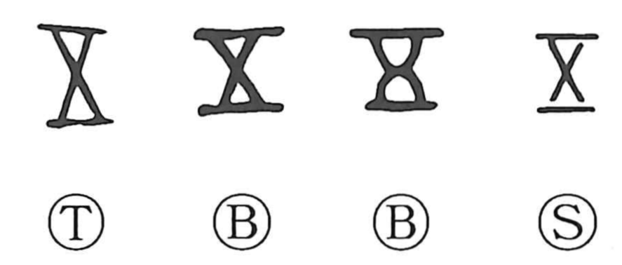

五

Kun: itsutsu, itsu | On: go
five
Explanation
The early numerical sign for five is often a cross made by laying counting rods diagonally. Forms already resembling 五 also occur. Their crossed wooden members are interpreted as a lid, and the use for the numerical word is consequently treated as a sound loan.
The protective lid survives more clearly in 吾, where crossed members cover a prayer receptacle. Such an element need not mean the number five whenever it appears in another character.
As a numeral, 五 names five objects, a fivefold action, or five repetitions. The related 伍 applies the count to a group of five people and then to companions in that group. Later named sets, including the five phases, build on this established numerical use.